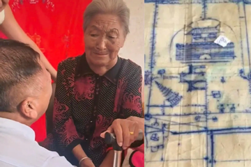
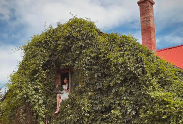

Báo mới nhất Cuộc sống Người đàn ông Úc say đắm mẹ đơn thân Việt xinh đẹp, vượt 6.000km làm đám cưới Đối với hai người từng đổ vỡ hôn nhân, quá khứ không quan trọng bằng sự đồng điệu trong tâm hồn và việc cùng xây dựng hạnh phúc trong tương...  Cuộc sống 36 năm lưu lạc, người đàn ông trở về nhờ bản đồ tự vẽ, quỳ khóc trước mẹ TRUNG QUỐC - Sau 36 năm lưu lạc, người đàn ông khiếm thính, khiếm ngôn Lưu Chí Quân cuối cùng cũng tìm được người thân nhờ những ký ức ít ỏi về quê nhà được anh tự tay vẽ t...  Cuộc sống Nàng dâu Ninh Bình mê mẩn khu vườn đẹp như cổ tích của bố mẹ chồng ở Canada Khu vườn ở vùng nông thôn tỉnh Alberta, Canada của bố mẹ chồng chị Annie Đỗ không chỉ là nơi nghỉ ngơi mà còn giúp gia đình gắn kết, lưu giữ nhiều kỷ niệm đáng nhớ bên nhau...
Đọc nhiều trong ngày 01 Tổng Bí thư, Chủ tịch nước Tô Lâm: Phát huy vai trò những 'đại sứ văn hóa', mang bản sắc Việt Nam tới gần hơn nữa với bạn bè quốc tế Thời sự · 1 giờ trước 02 Hệ thống Spider ‘săn’ UAV bằng âm thanh và AI giúp Nga làm chủ bầu trời tầm thấp Công nghệ · 1 giờ trước 03 Người đàn ông Úc say đắm mẹ đơn thân Việt xinh đẹp, vượt 6.000km làm đám cưới Đời sống · 1 giờ trước 04 Công an làm việc với 4 người hóa trang 'thầy trò Đường Tăng' đi bộ trong làn ô tô Thời sự · 1 giờ trước